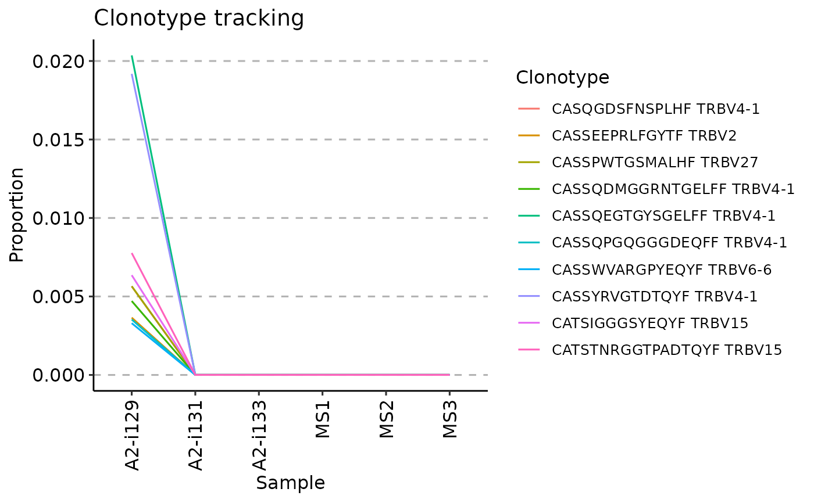
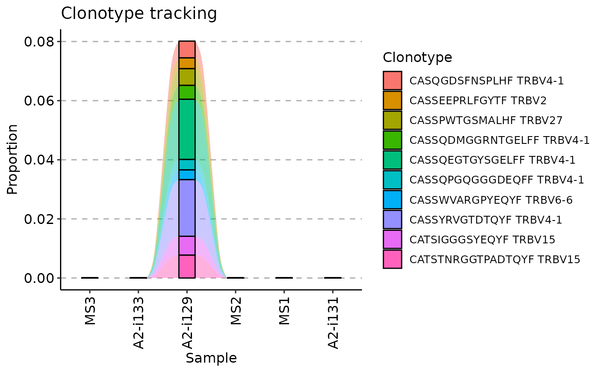

![[Deprecated]](figures/lifecycle-deprecated.svg)
Arguments
- .data
Output from the trackClonotypes function.
- .plot
Character. Either "smooth", "area" or "line". Each specifies a type of plot for visualisation of clonotype dynamics.
- .order
Numeric or character vector. Specifies the order to samples, e.g., it used for ordering samples by timepoints. Either See "Examples" below for more details.
- .log
Logical. If TRUE then use log-scale for the frequency axis.
- ...
Not used here.
Examples
# \dontrun{
# Load an example data that comes with immunarch
data(immdata)
# Make the data smaller in order to speed up the examples
immdata$data <- immdata$data[c(1, 2, 3, 7, 8, 9)]
immdata$meta <- immdata$meta[c(1, 2, 3, 7, 8, 9), ]
# Option 1
# Choose the first 10 amino acid clonotype sequences
# from the first repertoire to track
tc <- trackClonotypes(immdata$data, list(1, 10), .col = "aa")
# Choose the first 20 nucleotide clonotype sequences
# and their V genes from the "MS1" repertoire to track
tc <- trackClonotypes(immdata$data, list("MS1", 20), .col = "nt+v")
# Option 2
# Choose clonotypes with amino acid sequences "CASRGLITDTQYF" or "CSASRGSPNEQYF"
tc <- trackClonotypes(immdata$data, c("CASRGLITDTQYF", "CSASRGSPNEQYF"), .col = "aa")
# Option 3
# Choose the first 10 clonotypes from the first repertoire
# with amino acid sequences and V segments
target <- immdata$data[[1]] %>%
select(CDR3.aa, V.name) %>%
head(10)
tc <- trackClonotypes(immdata$data, target)
# Visualise the output regardless of the chosen option
# Therea are three way to visualise it, regulated by the .plot argument
vis(tc, .plot = "smooth")
#> Warning: id.vars and measure.vars are internally guessed when both are 'NULL'. All non-numeric/integer/logical type columns are considered id.vars, which in this case are columns [CDR3.aa, V.name, ...]. Consider providing at least one of 'id' or 'measure' vars in future.
 vis(tc, .plot = "area")
#> Warning: id.vars and measure.vars are internally guessed when both are 'NULL'. All non-numeric/integer/logical type columns are considered id.vars, which in this case are columns [CDR3.aa, V.name, ...]. Consider providing at least one of 'id' or 'measure' vars in future.
vis(tc, .plot = "area")
#> Warning: id.vars and measure.vars are internally guessed when both are 'NULL'. All non-numeric/integer/logical type columns are considered id.vars, which in this case are columns [CDR3.aa, V.name, ...]. Consider providing at least one of 'id' or 'measure' vars in future.
 vis(tc, .plot = "line")
#> Warning: id.vars and measure.vars are internally guessed when both are 'NULL'. All non-numeric/integer/logical type columns are considered id.vars, which in this case are columns [CDR3.aa, V.name, ...]. Consider providing at least one of 'id' or 'measure' vars in future.
vis(tc, .plot = "line")
#> Warning: id.vars and measure.vars are internally guessed when both are 'NULL'. All non-numeric/integer/logical type columns are considered id.vars, which in this case are columns [CDR3.aa, V.name, ...]. Consider providing at least one of 'id' or 'measure' vars in future.

# Visualising timepoints
# First, we create an additional column in the metadata with randomly choosen timepoints:
immdata$meta$Timepoint <- sample(1:length(immdata$data))
immdata$meta
#> # A tibble: 6 × 7
#> Sample ID Sex Age Status Lane Timepoint
#> <chr> <chr> <chr> <dbl> <chr> <chr> <int>
#> 1 A2-i129 C1 M 11 C A 3
#> 2 A2-i131 C2 M 9 C A 6
#> 3 A2-i133 C4 M 16 C A 2
#> 4 MS1 MS1 M 12 MS C 5
#> 5 MS2 MS2 M 30 MS C 4
#> 6 MS3 MS3 M 8 MS C 1
# Next, we create a vector with samples in the right order,
# according to the "Timepoint" column (from smallest to greatest):
sample_order <- order(immdata$meta$Timepoint)
# Sanity check: timepoints are following the right order:
immdata$meta$Timepoint[sample_order]
#> [1] 1 2 3 4 5 6
# Samples, sorted by the timepoints:
immdata$meta$Sample[sample_order]
#> [1] "MS3" "A2-i133" "A2-i129" "MS2" "MS1" "A2-i131"
# And finally, we visualise the data:
vis(tc, .order = sample_order)
#> Warning: id.vars and measure.vars are internally guessed when both are 'NULL'. All non-numeric/integer/logical type columns are considered id.vars, which in this case are columns [CDR3.aa, V.name, ...]. Consider providing at least one of 'id' or 'measure' vars in future.

# }